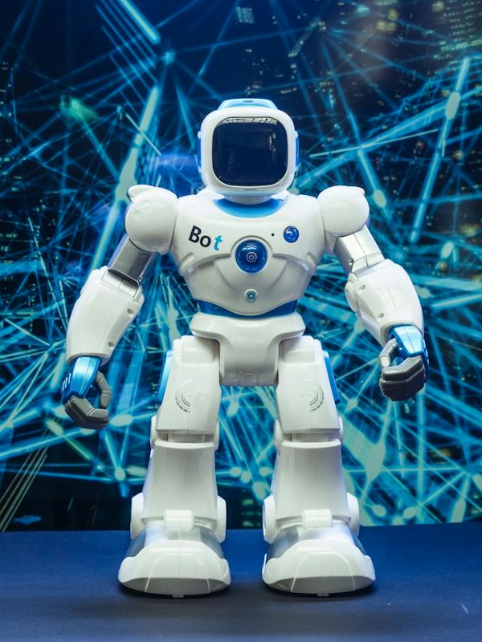

Welcome to the AI & Ethics Website
Welcome to the AI Ethics Hub! Here, we explore the intersection of AI, society, and human values. By understanding the ethical implications of AI, we can build a future where technology empowers humanity, fosters equality, and promotes a flourishing human experience. Explore our site to learn about AI ethics, best practices, and engage with the global community of AI researchers, policymakers, and advocates.
Artificial Intelligence (AI) holds immense potential to revolutionize industries across the globe. However, as we move towards an increasingly AI-driven world, it is crucial to consider the ethical implications of this technological advancement.